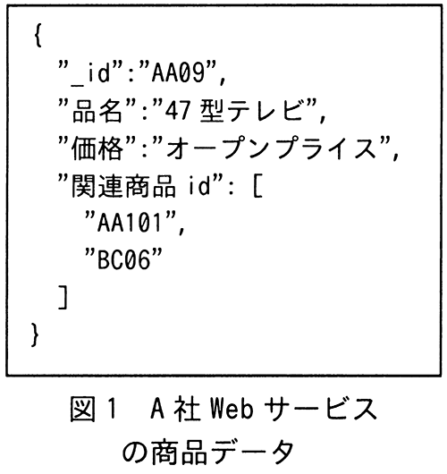
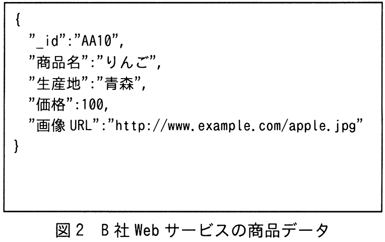

JSON形式で表現される図1，図2のような商品データを複数のWebサービスから取得し，商品データベースとして蓄積する際のデータの格納方法に関する記述のうち，適切なものはどれか。ここで，商品データの取得元となるWebサービスは随時変更され，項目数や内容は予測できない。したがって，商品データベースの検索時に使用するキーにはあらかじめ制限を設けない。


ア 階層型データベースを使用し，項目名を上位階層とし，値を下位階層とした2階層でデータを格納する。
イ グラフデータベースを使用し，商品データの項目名の集合から成るノードと値の集合から成るノードを作り，二つのノードを関係付けたグラフとしてデータを格納する。
ウ ドキュメントデータベースを使用し，項目構成の違いを区別せず，商品データ単位にデータを格納する。
エ 関係データベースを使用し，商品データの各項目名を個別の列名とした表を定義してデータを格納する。